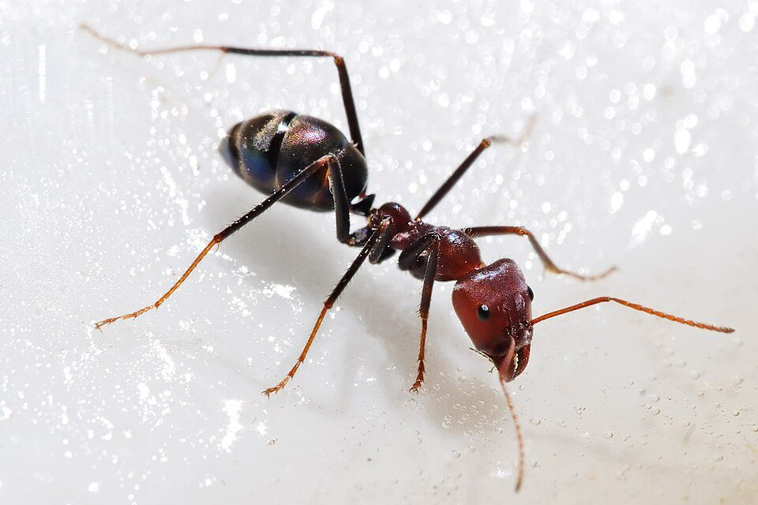
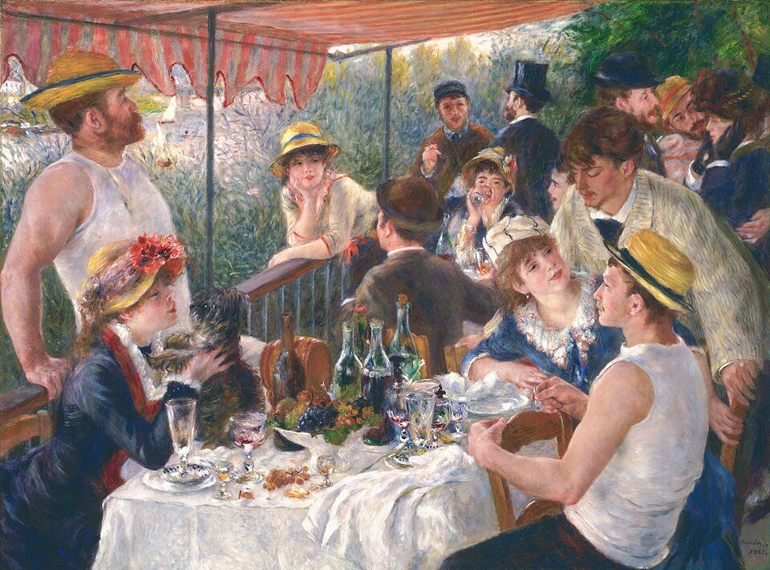
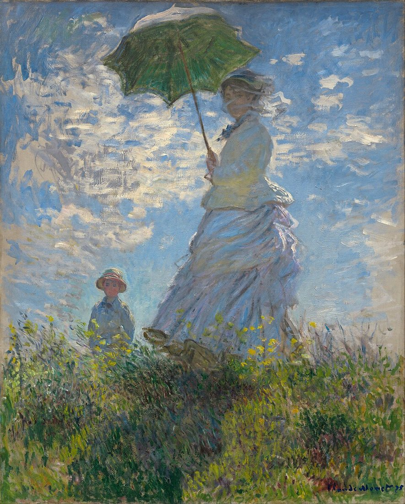
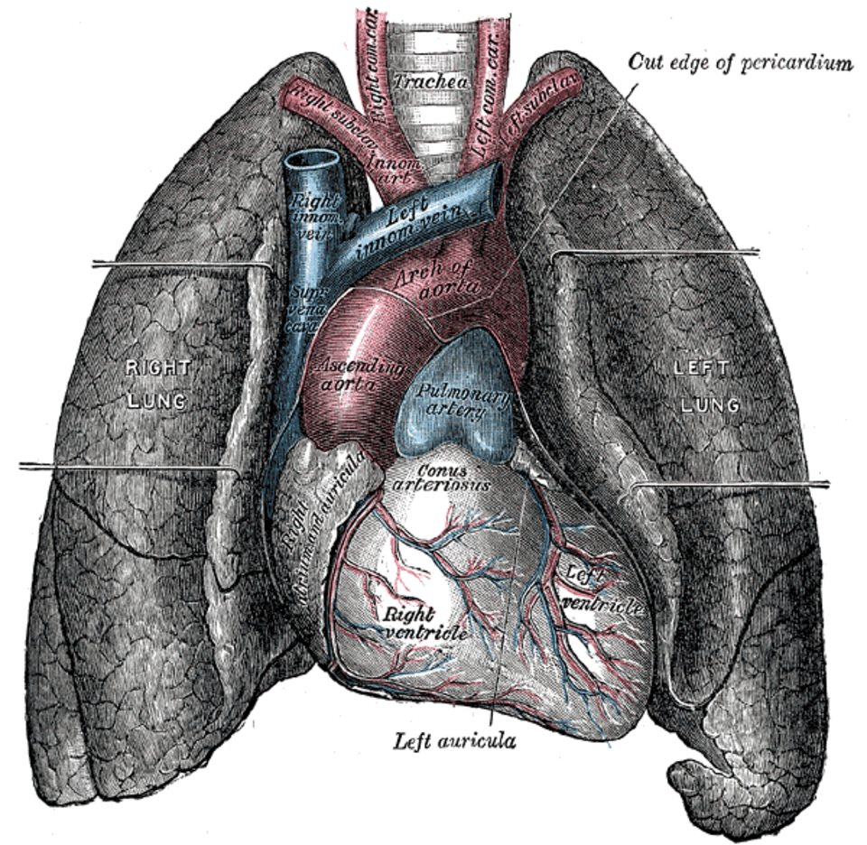
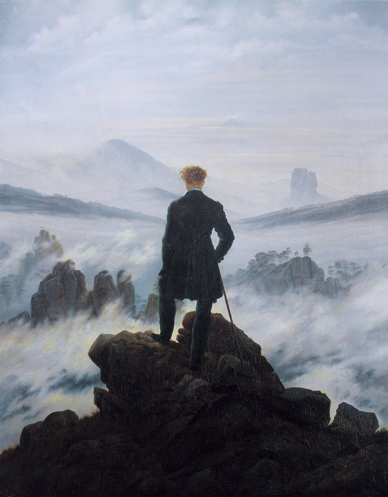
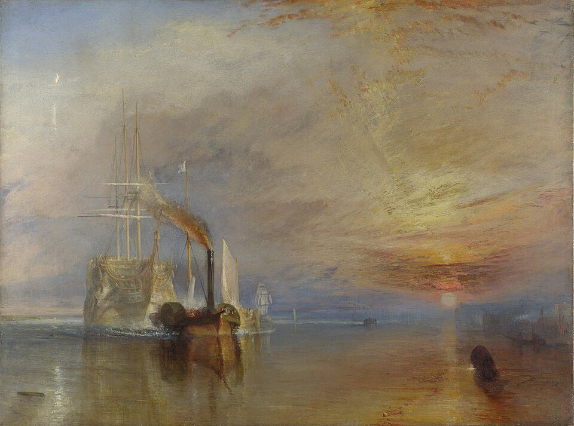

SARA · mardi 17 novembre 2026
Vocabulaire, expressions et grammaireEmpreintes, emprunts et souvenirs · les pronoms relatifsImpronte, prestiti e ricordi · i pronomi relativi
Le mont Bromo au lever du soleil, avec le Semeru au fond · Java oriental, Indonésie
Sara, voici votre leçon : le vocabulaire en cartes à retourner, la grammaire, huit exercices et une réflexion. Touchez une carte pour la retourner, le haut-parleur 🔊 pour écouter et IT pour la traduction.
Sara, ecco la sua lezione: il lessico in carte da girare, la grammatica, otto esercizi e una riflessione. Tocchi una carta per girarla, l'altoparlante 🔊 per ascoltare e IT per la traduzione.
1
Vocabulaire et expressions
Lessico ed espressioni
les empreintes digitales
nom féminin pluriel · une empreinte digitale
sostantivo femminile plurale
Une empreinte digitale · planche ancienne
↻ toucher pour retourner · toccare per girare
les empreintes digitales le impronte digitali
Les dessins uniques que forment les petites lignes au bout de nos doigts. Une empreinte, c'est aussi la trace laissée par un pied, une main ou un objet.
I disegni unici formati dalle piccole linee sulla punta delle dita. Une empreinte è anche la traccia lasciata da un piede, da una mano o da un oggetto.
Mon téléphone se déverrouille avec mon empreinte digitale.
Il mio telefono si sblocca con la mia impronta digitale.
Sur le sentier enneigé, on voyait les empreintes d'un chamois.
Sul sentiero innevato si vedevano le impronte di un camoscio.
Au figuré, laisser son empreinte, c'est marquer les autres par ce qu'on fait. L'empreinte carbone, c'est la quantité de CO2 que nous produisons.
In senso figurato: laisser son empreinte = lasciare il segno. L'empreinte carbone = l'impronta di carbonio.
↻
emprunter · un emprunt
verbe du premier groupe · nom masculin
verbo del 1° gruppo · sostantivo maschile
La bibliothèque Sainte-Geneviève, Henri Labrouste, 1851 · Paris
↻ toucher pour retourner · toccare per girare
emprunter · faire un emprunt prendere in prestito · accendere un prestito, un mutuo
Emprunter quelque chose à quelqu'un : le prendre et le rendre ensuite. Le contraire, c'est prêter. Un emprunt, c'est l'argent prêté par une banque : on fait un emprunt. On dit aussi emprunter un chemin : prendre une route.
Emprunter qualcosa a qualcuno: prenderlo e poi restituirlo. Il contrario è prêter (prestare). Un emprunt è il denaro prestato da una banca: si fa un emprunt (si accende un prestito, un mutuo). Si dice anche emprunter un chemin: prendere una strada.
J'ai emprunté trois romans à la bibliothèque pour les vacances.
Ho preso in prestito tre romanzi in biblioteca per le vacanze.
Pour acheter leur chalet, ils ont fait un emprunt sur vingt ans.
Per comprare lo chalet hanno acceso un mutuo di vent'anni.
Pour monter au refuge, nous avons emprunté le sentier des crêtes.
Per salire al rifugio abbiamo preso il sentiero delle creste.
Attention : on emprunte quelque chose à quelqu'un. Je prête mon appareil photo à Marc : Marc emprunte mon appareil photo.
Attenzione: emprunter à qualcuno = prendere in prestito da qualcuno. Presto la mia macchina fotografica a Marc: Marc prende in prestito la mia macchina fotografica.
↻

les fourmis
nom féminin · une fourmi
sostantivo femminile
Une fourmi en gros plan · photographie macro
↻ toucher pour retourner · toccare per girare
les fourmis le formiche
De petits insectes qui vivent en colonie, dans une fourmilière.
Piccoli insetti che vivono in colonia, in un formicaio (une fourmilière).
En photographie macro, il faut beaucoup de patience pour suivre une fourmi.
Nella fotografia macro ci vuole molta pazienza per seguire una formica.
Après deux heures debout, j'ai des fourmis dans les jambes.
Dopo due ore in piedi, ho il formicolio alle gambe.
Avoir des fourmis dans les jambes ou dans les mains : sentir des picotements. Un travail de fourmi : un travail long et minutieux.
Avoir des fourmis dans les jambes, dans les mains = avere il formicolio alle gambe, alle mani. Un travail de fourmi = un lavoro lungo e minuzioso.
↻

aimer bien · vouloir bien
verbe + adverbe bien
verbo + avverbio bien
Le Déjeuner des canotiers, Pierre-Auguste Renoir, 1880-1881 · The Phillips Collection, Washington
↻ toucher pour retourner · toccare per girare
j'aime bien · je l'aime bien · je veux bien mi piace · mi è simpatico · volentieri
Avec aimer, bien adoucit le verbe. J'aime bien une chose : elle me plaît. Je l'aime bien, une personne : elle m'est sympathique. Je veux bien : j'accepte avec plaisir.
Con aimer, bien attenua il verbo. J'aime bien una cosa: mi piace. Je l'aime bien, una persona: mi è simpatica, le voglio bene. Je veux bien: accetto volentieri.
J'aime bien cuisiner le dimanche, quand j'ai le temps.
Mi piace cucinare la domenica, quando ho tempo.
Mon nouvel interne, je l'aime bien : il est calme et précis.
Il mio nuovo specializzando mi è simpatico: è calmo e preciso.
— Vous voulez un café ? — Oui, je veux bien, merci !
— Vuole un caffè? — Sì, volentieri, grazie!
D'autres expressions avec bien : bien sûr, eh bien, tant bien que mal, bien des fois.
Altre espressioni con bien: bien sûr (certo), eh bien (ebbene), tant bien que mal (alla meno peggio), bien des fois (molte volte).
↻

aimer beaucoup
verbe + adverbe beaucoup
verbo + avverbio beaucoup
La Promenade, la femme à l'ombrelle, Claude Monet, 1875 · National Gallery of Art, Washington
↻ toucher pour retourner · toccare per girare
j'aime beaucoup · je t'aime beaucoup mi piace molto · ti voglio molto bene
Avec une chose, j'aime beaucoup : elle me plaît vraiment. Avec une personne, je t'aime beaucoup, je l'aime beaucoup : c'est de l'affection, de l'amitié, ce n'est pas de l'amour.
Con una cosa, j'aime beaucoup = mi piace davvero. Con una persona, je t'aime beaucoup, je l'aime beaucoup: è affetto, amicizia, non amore.
J'aime beaucoup la lumière de ce tableau.
Mi piace molto la luce di questo quadro.
Ma collègue Lucia, je l'aime beaucoup.
La mia collega Lucia, le voglio molto bene.
Je t'aime beaucoup, tu es une amie précieuse.
Ti voglio molto bene, sei un'amica preziosa.
Avec une personne, du plus fort au plus léger : je t'aime, je t'aime beaucoup, je t'aime bien. Avec une chose : j'adore, j'aime beaucoup, j'aime, j'aime bien.
Con una persona: je t'aime (ti amo) → je t'aime beaucoup (ti voglio molto bene) → je t'aime bien (mi sei simpatico). Con una cosa: j'adore (adoro) → j'aime beaucoup (mi piace molto) → j'aime (mi piace) → j'aime bien (mi piace, mi va).
↻

de tout mon cœur
expression
espressione
Le cœur et les poumons · Gray's Anatomy, planche 490, 1918
↻ toucher pour retourner · toccare per girare
de tout mon cœur con tutto il cuore
Avec une grande sincérité, avec tout son amour. Le possessif change avec la personne : de tout mon, ton, son, notre, votre, leur cœur.
Con grande sincerità, con tutto il proprio amore. Il possessivo cambia con la persona: de tout mon, ton, son, notre, votre, leur cœur.
Je vous remercie de tout mon cœur pour votre soutien.
La ringrazio con tutto il cuore per il suo sostegno.
Elle soigne ses patients de tout son cœur.
Cura i suoi pazienti con tutto il cuore.
Et aussi : apprendre par cœur, et avoir le cœur sur la main, c'est-à-dire être généreux. Attention : avoir mal au cœur, c'est avoir envie de vomir !
E anche: apprendre par cœur (imparare a memoria), avoir le cœur sur la main (essere generoso). Attenzione: avoir mal au cœur = avere la nausea!
↻

admirer
verbe du premier groupe · l'admiration (nom féminin)
verbo del 1° gruppo · l'admiration (sostantivo femminile)
Le Voyageur contemplant une mer de nuages, Caspar David Friedrich, vers 1818 · Kunsthalle, Hambourg
↻ toucher pour retourner · toccare per girare
admirer ammirare
Regarder avec plaisir une chose belle, ou avoir une grande estime pour quelqu'un : admirer quelqu'un pour quelque chose.
Guardare con piacere una cosa bella, o avere grande stima di qualcuno: admirer quelqu'un pour quelque chose (ammirare qualcuno per qualcosa).
Arrivés au sommet, nous avons admiré la vue sur toute la vallée.
Arrivati in cima, abbiamo ammirato la vista su tutta la valle.
J'admire mon chef de service pour son calme pendant les urgences.
Ammiro il mio primario per la sua calma durante le urgenze.
↻
se souvenir de
verbe pronominal du troisième groupe · un souvenir (nom masculin)
verbo pronominale del 3° gruppo · un souvenir (sostantivo maschile)
Souvenir de Mortefontaine, Camille Corot, 1864 · Musée du Louvre, Paris
↻ toucher pour retourner · toccare per girare
se souvenir de ricordarsi di
Garder quelque chose en mémoire. Ce verbe est toujours suivi de de. Le nom un souvenir, c'est ce qu'on garde en mémoire, et aussi un petit objet rapporté de voyage.
Conservare qualcosa nella memoria. Questo verbo è sempre seguito da de. Il sostantivo un souvenir significa un ricordo, e anche un souvenir di viaggio.
Je me souviens très bien de mon premier voyage en Indonésie.
Mi ricordo molto bene del mio primo viaggio in Indonesia.
— Vous vous souvenez du nom de ce médicament ? — Oui, je m'en souviens.
— Si ricorda il nome di questo farmaco? — Sì, me lo ricordo.
Se souvenir de quelque chose : je m'en souviens. Se rappeler quelque chose, sans de : je me le rappelle.
Se souvenir de qualcosa → je m'en souviens (me ne ricordo). Se rappeler qualcosa, senza de → je me le rappelle (me lo ricordo).
↻

le coucher de soleil
nom masculin
sostantivo maschile
Le Dernier Voyage du Téméraire, J. M. W. Turner, 1839 · National Gallery, Londres
↻ toucher pour retourner · toccare per girare
le coucher de soleil il tramonto
Le moment où le soleil disparaît à l'horizon. Le contraire : le lever de soleil. Le verbe : le soleil se couche. On dit aussi le coucher du soleil.
Il momento in cui il sole scompare all'orizzonte. Il contrario: le lever de soleil (l'alba). Il verbo: le soleil se couche (il sole tramonta). Si dice anche le coucher du soleil.
J'ai photographié un magnifique coucher de soleil sur les volcans de Java.
Ho fotografato un magnifico tramonto sui vulcani di Giava.
En hiver, à la montagne, le soleil se couche très tôt.
D'inverno, in montagna, il sole tramonta molto presto.
↻
2
Grammaire
Grammatica
Se souvenir de : le présent
Se souvenir de: il presente
C'est un verbe pronominal du troisième groupe, comme venir. Attention aux deux pronoms : je me, tu te, il se, nous nous, vous vous, ils se.
È un verbo pronominale del 3° gruppo, come venir. Attenzione ai due pronomi: je me, tu te, il se, nous nous, vous vous, ils se.
La négation, la question, l'impératif
La negazione, la domanda, l'imperativo
Je ne me souviens pas de son nom.
Non mi ricordo il suo nome.
Vous souvenez-vous de cette patiente ?
Si ricorda di quella paziente?
Souviens-toi de prendre ton appareil photo !
Ricordati di prendere la macchina fotografica!
Au passé composé, avec être : je me suis souvenue, il s'est souvenu. Au futur : je me souviendrai.
Al passé composé, con être: je me suis souvenue, il s'est souvenu. Al futuro: je me souviendrai.
Petit rappel : il y a eu, il y aura
Breve ripasso: il y a eu, il y aura
Il y a se conjugue à tous les temps, toujours au singulier, même avec un nom pluriel.
Il y a si coniuga a tutti i tempi, sempre al singolare, anche con un nome plurale.
| présent | c'è, ci sono | |
| imparfait | c'era, c'erano | |
| passé composé | c'è stato, ci sono stati | |
| futur | ci sarà, ci saranno | |
| conditionnel | ci sarebbe, ci sarebbero |
Cette nuit, il y a eu trois urgences dans le service.
Questa notte ci sono state tre urgenze nel reparto.
Demain, il y aura une réunion à huit heures.
Domani ci sarà una riunione alle otto.
Attention : il y a suivi d'une durée indique le passé. Je suis allée à Bali il y a deux ans.
Attenzione: il y a + durata = fa. Sono andata a Bali due anni fa.
Les pronoms relatifs simples : qui, que, dont, où
I pronomi relativi semplici: qui, que, dont, où
Ils relient deux phrases et remplacent un nom déjà cité.
Collegano due frasi e sostituiscono un nome già citato.
sujet du verbe
soggetto del verbo
Le patient qui arrive est très anxieux.
Il paziente che arriva è molto ansioso.
complément d'objet direct
complemento oggetto
La photo que j'ai prise au sommet est ma préférée.
La foto che ho scattato in cima è la mia preferita.
remplace de + nom (parler de, se souvenir de, avoir besoin de…)
sostituisce de + nome
C'est un voyage dont je me souviens encore.
È un viaggio di cui mi ricordo ancora.
le lieu ou le temps
il luogo o il tempo
L'hôpital où je travaille est près de la gare. Le jour où nous sommes arrivés, il pleuvait.
L'ospedale dove lavoro è vicino alla stazione. Il giorno in cui siamo arrivati, pioveva.
Les pronoms relatifs composés
I pronomi relativi composti
Ils s'accordent avec le nom qu'ils remplacent, en genre et en nombre. On les emploie après une préposition.
Si accordano con il nome che sostituiscono, in genere e numero. Si usano dopo una preposizione.
préposition + lequel
il quale, la quale, i quali, le quali
à + lequel
al quale, alla quale, ai quali, alle quali
de + lequel
del quale, della quale, dei quali, delle quali
A. Préposition + lequel : dans, avec, pour, par, sur, sans, parmi, entre
A. Preposizione + lequel: dans, avec, pour, par, sur, sans, parmi, entre
dans · avec · pour · par · sur · sans + lequel, laquelle, lesquels, lesquelles
La salle dans laquelle nous faisons les coronarographies est toute neuve.
La sala nella quale facciamo le coronarografie è nuovissima.
Le cathéter avec lequel je travaille est très souple.
Il catetere con il quale lavoro è molto flessibile.
Les raisons pour lesquelles j'ai choisi la cardiologie sont nombreuses.
Le ragioni per le quali ho scelto la cardiologia sono numerose.
Pour une personne, on préfère qui : la collègue avec qui je travaille. Mais après parmi et entre, toujours lesquels, lesquelles.
Per una persona si preferisce qui: la collega con cui lavoro. Ma dopo parmi ed entre, sempre lesquels, lesquelles.
B. À + lequel → auquel : penser à, participer à, s'intéresser à
B. À + lequel → auquel: penser à, participer à, s'intéresser à
à + lequel = auquel · à + lesquels = auxquels · à + lesquelles = auxquelles · mais à laquelle
Le congrès auquel je participe a lieu à Lyon. (participer à)
Il congresso al quale partecipo si tiene a Lione.
La question à laquelle je pense est difficile. (penser à)
La domanda alla quale penso è difficile.
Les sujets auxquels je m'intéresse : la photo et la cuisine. (s'intéresser à)
Gli argomenti ai quali mi interesso: la fotografia e la cucina.
C. De + lequel → duquel : au bord de, près de, au sommet de, au cours de
C. De + lequel → duquel: au bord de, près de, au sommet de, au cours de
de + lequel = duquel · de + lesquels = desquels · de + lesquelles = desquelles · mais de laquelle
Le lac au bord duquel nous avons campé était gelé.
Il lago in riva al quale abbiamo campeggiato era ghiacciato.
La montagne au sommet de laquelle nous sommes montés s'appelle le Bromo.
La montagna sulla cima della quale siamo saliti si chiama Bromo.
Les gardes au cours desquelles je dors peu sont épuisantes.
I turni di guardia durante i quali dormo poco sono estenuanti.
Dont ou duquel ? Après un verbe suivi de de, on dit dont : le livre dont je parle. Après une préposition composée (au bord de, près de…), on dit duquel : le lac au bord duquel nous avons dormi.
Dont o duquel? Dopo un verbo + de si usa dont: il libro di cui parlo. Dopo una preposizione composta (au bord de, près de…) si usa duquel: il lago in riva al quale abbiamo dormito.
Aide-mémoire : les temps du récit
Promemoria: i tempi del racconto
| passé composé | avoir ou être + participe passé : nous avons fait, je suis arrivée, il s'est senti. avoir o être + participio passato. Con être e con i verbi pronominali, il participio si accorda con il soggetto. |
| imparfait | radical de nous au présent + -ais, -ais, -ait, -ions, -iez, -aient : nous attend-ons → il attendait. radice di nous al presente + -ais, -ais, -ait, -ions, -iez, -aient. Per descrivere una situazione nel passato. |
| futur simple | infinitif + -ai, -as, -a, -ons, -ez, -ont. Irréguliers : pouvoir → pourr-, aller → ir-, venir → viendr-. infinito + -ai, -as, -a, -ons, -ez, -ont. Irregolari: pouvoir → pourr-, aller → ir-, venir → viendr-. |
| conditionnel présent | radical du futur + terminaisons de l'imparfait : je pourrais, il viendrait. Avec si + imparfait. radice del futuro + desinenze dell'imperfetto. Con si + imperfetto. |
| subjonctif présent | radical de ils au présent + -e, -es, -e, -ions, -iez, -ent : ils prenn-ent → qu'il prenne. Après je voudrais que, il faut que. radice di ils al presente + -e, -es, -e, -ions, -iez, -ent. Dopo je voudrais que, il faut que. |
3
Exercices
Esercizi
01
EXERCICE 1
Choisissez le bon mot.
Scelga la parola giusta.
1
Pour entrer au bloc, on pose le doigt sur un lecteur d'______ digitales.
Per entrare in sala operatoria si appoggia il dito su un lettore di impronte digitali.
Pour entrer au bloc, on pose le doigt sur un lecteur d'empreintes digitales.
Per entrare in sala operatoria si appoggia il dito su un lettore di impronte digitali.
💡 les empreintes digitales = le impronte digitali
les empreintes digitales = le impronte digitali
2
Je n'ai plus de batterie : je peux ______ ton chargeur ?
Ho il telefono scarico: posso prendere in prestito il tuo caricabatterie?
Je n'ai plus de batterie : je peux emprunter ton chargeur ?
Ho il telefono scarico: posso prendere in prestito il tuo caricabatterie?
💡 emprunter = prendre et rendre ensuite ; prêter = donner pour un temps
emprunter = prendere e poi restituire; prêter = dare per un certo tempo
3
Pour acheter leur appartement, ils ont fait un ______ à la banque.
Per comprare il loro appartamento hanno acceso un mutuo in banca.
Pour acheter leur appartement, ils ont fait un emprunt à la banque.
Per comprare il loro appartamento hanno acceso un mutuo in banca.
💡 faire un emprunt = accendere un prestito, un mutuo
faire un emprunt = accendere un prestito, un mutuo
4
Le patient se plaint d'avoir des ______ dans la main gauche.
Il paziente si lamenta di avere un formicolio alla mano sinistra.
Le patient se plaint d'avoir des fourmis dans la main gauche.
Il paziente si lamenta di avere un formicolio alla mano sinistra.
💡 avoir des fourmis = avere il formicolio
avoir des fourmis = avere il formicolio
5
Depuis la terrasse du refuge, nous avons ______ le coucher de soleil.
Dalla terrazza del rifugio abbiamo ammirato il tramonto.
Depuis la terrasse du refuge, nous avons admiré le coucher de soleil.
Dalla terrazza del rifugio abbiamo ammirato il tramonto.
💡 admirer = regarder avec plaisir une chose belle
admirer = guardare con piacere una cosa bella
6
Je vous remercie de tout mon ______ pour ce beau cadeau.
La ringrazio con tutto il cuore per questo bel regalo.
Je vous remercie de tout mon cœur pour ce beau cadeau.
La ringrazio con tutto il cuore per questo bel regalo.
💡 de tout mon cœur = con tutto il cuore
de tout mon cœur = con tutto il cuore
7
Vous vous souvenez ______ ce petit restaurant à Ubud ?
Si ricorda di quel piccolo ristorante a Ubud?
Vous vous souvenez de ce petit restaurant à Ubud ?
Si ricorda di quel piccolo ristorante a Ubud?
💡 se souvenir est toujours suivi de de
se souvenir è sempre seguito da de
8
Le ______ de soleil sur les volcans de Java était magnifique.
Il tramonto sui vulcani di Giava era magnifico.
Le coucher de soleil sur les volcans de Java était magnifique.
Il tramonto sui vulcani di Giava era magnifico.
💡 le coucher de soleil = il tramonto (nom masculin)
le coucher de soleil = il tramonto (sostantivo maschile)
02
EXERCICE 2
Bien ou beaucoup ? Choisissez.
Bien o beaucoup? Scelga.
1
— Vous voulez goûter ma tarte aux pommes ? — Oui, je veux ______ !
— Vuole assaggiare la mia torta di mele? — Sì, volentieri!
— Vous voulez goûter ma tarte aux pommes ? — Oui, je veux bien !
— Vuole assaggiare la mia torta di mele? — Sì, volentieri!
💡 je veux bien = j'accepte avec plaisir
je veux bien = accetto volentieri
2
J'aime ______ la photographie : c'est ma grande passion !
Mi piace molto la fotografia: è la mia grande passione!
J'aime beaucoup la photographie : c'est ma grande passion !
Mi piace molto la fotografia: è la mia grande passione!
💡 une passion → beaucoup, plus fort que bien
una passione → beaucoup, più forte di bien
3
Ce nouveau collègue est sympathique, je l'aime ______.
Questo nuovo collega è simpatico, mi piace.
Ce nouveau collègue est sympathique, je l'aime bien.
Questo nuovo collega è simpatico, mi piace.
💡 je l'aime bien = il m'est sympathique
je l'aime bien = mi è simpatico
4
Tu me prêtes ton guide de randonnée ? — Je veux ______, mais rends-le-moi vite.
Mi presti la tua guida escursionistica? — Volentieri, ma restituiscimela presto.
Tu me prêtes ton guide de randonnée ? — Je veux bien, mais rends-le-moi vite.
Mi presti la tua guida escursionistica? — Volentieri, ma restituiscimela presto.
💡 je veux bien = d'accord, volontiers
je veux bien = d'accordo, volentieri
5
C'est ma meilleure amie : je ______, mais ce n'est pas de l'amour.
È la mia migliore amica: le voglio molto bene, ma non è amore.
C'est ma meilleure amie : je l'aime beaucoup, mais ce n'est pas de l'amour.
È la mia migliore amica: le voglio molto bene, ma non è amore.
💡 je l'aime beaucoup = affection ; je l'aime = amour
je l'aime beaucoup = affetto; je l'aime = amore
6
« Je t'aime beaucoup » veut dire : ______
«Je t'aime beaucoup» significa:
Je t'aime beaucoup.
«Je t'aime beaucoup» significa:
💡 avec beaucoup, aimer devient affection, pas amour
con beaucoup, aimer diventa affetto, non amore
03
EXERCICE 3
Conjuguez : se souvenir au présent, il y a eu ou il y aura.
Coniughi: se souvenir al presente, il y a eu o il y aura.
se souvenir · présent
1
Nous ______ de notre trek en Indonésie.
Ci ricordiamo del nostro trekking in Indonesia.
Nous nous souvenons de notre trek en Indonésie.
Ci ricordiamo del nostro trekking in Indonesia.
se souvenir · présent
2
Tu ______ du nom de ce village ?
Ti ricordi il nome di quel villaggio?
Tu te souviens du nom de ce village ?
Ti ricordi il nome di quel villaggio?
se souvenir · présent
3
Mes parents ______ encore de leur voyage de noces.
I miei genitori si ricordano ancora del loro viaggio di nozze.
Mes parents se souviennent encore de leur voyage de noces.
I miei genitori si ricordano ancora del loro viaggio di nozze.
se souvenir · présent
4
Je ne ______ plus de son prénom.
Non mi ricordo più del suo nome.
Je ne me souviens plus de son prénom.
Non mi ricordo più del suo nome.
se souvenir · présent
5
Vous ______ de cette patiente ?
Si ricorda di quella paziente?
Vous vous souvenez de cette patiente ?
Si ricorda di quella paziente?
se souvenir · présent
6
Elle ______ de tout, c'est incroyable !
Si ricorda di tutto, è incredibile!
Elle se souvient de tout, c'est incroyable !
Si ricorda di tutto, è incredibile!
il y a · passé composé
7
La nuit dernière, ______ trois urgences dans le service.
La notte scorsa ci sono state tre urgenze nel reparto.
La nuit dernière, il y a eu trois urgences dans le service.
La notte scorsa ci sono state tre urgenze nel reparto.
il y a · futur
8
Demain, ______ de la neige sur les pistes de ski.
Domani ci sarà neve sulle piste da sci.
Demain, il y aura de la neige sur les pistes de ski.
Domani ci sarà neve sulle piste da sci.
il y a · passé composé
9
Pendant l'intervention, ______ une petite complication.
Durante l'intervento c'è stata una piccola complicazione.
Pendant l'intervention, il y a eu une petite complication.
Durante l'intervento c'è stata una piccola complicazione.
il y a · futur
10
Au congrès de mars, ______ plus de mille cardiologues.
Al congresso di marzo ci saranno più di mille cardiologi.
Au congrès de mars, il y aura plus de mille cardiologues.
Al congresso di marzo ci saranno più di mille cardiologi.
04
EXERCICE 4
Qui, que, dont ou où ? Choisissez.
Qui, que, dont o où? Scelga.
1
Le patient ______ attend devant la salle est très anxieux.
Il paziente che aspetta davanti alla sala è molto ansioso.
Le patient qui attend devant la salle est très anxieux.
Il paziente che aspetta davanti alla sala è molto ansioso.
💡 qui = sujet du verbe attendre
qui = soggetto del verbo attendre
2
La photo ______ j'ai prise au sommet est ma préférée.
La foto che ho scattato in cima è la mia preferita.
La photo que j'ai prise au sommet est ma préférée.
La foto che ho scattato in cima è la mia preferita.
💡 que = complément d'objet direct (j'ai pris la photo)
que = complemento oggetto (ho scattato la foto)
3
C'est une recette ______ je me souviens depuis l'enfance.
È una ricetta di cui mi ricordo dall'infanzia.
C'est une recette dont je me souviens depuis l'enfance.
È una ricetta di cui mi ricordo dall'infanzia.
💡 se souvenir de → dont
se souvenir de → dont
4
L'hôpital ______ je travaille est près de la gare.
L'ospedale dove lavoro è vicino alla stazione.
L'hôpital où je travaille est près de la gare.
L'ospedale dove lavoro è vicino alla stazione.
💡 où = le lieu
où = il luogo
5
Voici le livre ______ je vous ai parlé.
Ecco il libro di cui le ho parlato.
Voici le livre dont je vous ai parlé.
Ecco il libro di cui le ho parlato.
💡 parler de → dont
parler de → dont
6
Le jour ______ nous sommes arrivés à Bali, il pleuvait.
Il giorno in cui siamo arrivati a Bali pioveva.
Le jour où nous sommes arrivés à Bali, il pleuvait.
Il giorno in cui siamo arrivati a Bali pioveva.
💡 où = le temps, après le jour, le moment, l'année
où = il tempo, dopo le jour, le moment, l'année
7
C'est un examen ______ j'ai besoin avant d'opérer.
È un esame di cui ho bisogno prima di operare.
C'est un examen dont j'ai besoin avant d'opérer.
È un esame di cui ho bisogno prima di operare.
💡 avoir besoin de → dont
avoir besoin de → dont
05
EXERCICE 5
Choisissez le bon pronom relatif composé.
Scelga il pronome relativo composto giusto.
1
La salle dans ______ nous faisons les coronarographies est toute neuve.
La sala nella quale facciamo le coronarografie è nuovissima.
La salle dans laquelle nous faisons les coronarographies est toute neuve.
La sala nella quale facciamo le coronarografie è nuovissima.
💡 dans + la salle (féminin singulier) → laquelle
dans + la salle (femminile singolare) → laquelle
2
Le guide avec ______ nous avons fait le trek parlait français.
La guida con la quale abbiamo fatto il trekking parlava francese.
Le guide avec lequel nous avons fait le trek parlait français.
La guida con la quale abbiamo fatto il trekking parlava francese.
💡 avec + le guide (masculin singulier) → lequel
avec + le guide (maschile singolare) → lequel
3
Le congrès ______ je participe a lieu à Lyon.
Il congresso al quale partecipo si tiene a Lione.
Le congrès auquel je participe a lieu à Lyon.
Il congresso al quale partecipo si tiene a Lione.
💡 participer à + le congrès → auquel
participer à + le congrès → auquel
4
La question ______ je pense depuis hier est difficile.
La domanda alla quale penso da ieri è difficile.
La question à laquelle je pense depuis hier est difficile.
La domanda alla quale penso da ieri è difficile.
💡 penser à + la question → à laquelle
penser à + la question → à laquelle
5
Les sujets ______ je m'intéresse sont la photo et la cuisine.
Gli argomenti ai quali mi interesso sono la fotografia e la cucina.
Les sujets auxquels je m'intéresse sont la photo et la cuisine.
Gli argomenti ai quali mi interesso sono la fotografia e la cucina.
💡 s'intéresser à + les sujets (masculin pluriel) → auxquels
s'intéresser à + les sujets (maschile plurale) → auxquels
6
Le lac au bord ______ nous avons campé était gelé.
Il lago in riva al quale abbiamo campeggiato era ghiacciato.
Le lac au bord duquel nous avons campé était gelé.
Il lago in riva al quale abbiamo campeggiato era ghiacciato.
💡 au bord de + le lac → duquel
au bord de + le lac → duquel
7
La montagne au sommet ______ nous sommes montés s'appelle le Bromo.
La montagna sulla cima della quale siamo saliti si chiama Bromo.
La montagne au sommet de laquelle nous sommes montés s'appelle le Bromo.
La montagna sulla cima della quale siamo saliti si chiama Bromo.
💡 au sommet de + la montagne → de laquelle
au sommet de + la montagne → de laquelle
8
Les gardes au cours ______ je dors peu sont épuisantes.
I turni di guardia durante i quali dormo poco sono estenuanti.
Les gardes au cours desquelles je dors peu sont épuisantes.
I turni di guardia durante i quali dormo poco sono estenuanti.
💡 au cours de + les gardes (féminin pluriel) → desquelles
au cours de + les gardes (femminile plurale) → desquelles
9
Les patients parmi ______ on a choisi les volontaires sont suivis en cardiologie.
I pazienti tra i quali sono stati scelti i volontari sono seguiti in cardiologia.
Les patients parmi lesquels on a choisi les volontaires sont suivis en cardiologie.
I pazienti tra i quali sono stati scelti i volontari sono seguiti in cardiologia.
💡 après parmi et entre, on n'utilise jamais qui → lesquels
dopo parmi ed entre non si usa mai qui → lesquels
10
Les raisons pour ______ j'ai choisi la cardiologie sont nombreuses.
Le ragioni per le quali ho scelto la cardiologia sono numerose.
Les raisons pour lesquelles j'ai choisi la cardiologie sont nombreuses.
Le ragioni per le quali ho scelto la cardiologia sono numerose.
💡 pour + les raisons (féminin pluriel) → lesquelles
per + les raisons (femminile plurale) → lesquelles
06
EXERCICE 6
Une journée en salle de cathétérisme. Conjuguez les verbes.
Una giornata in sala di emodinamica. Coniughi i verbi.
arriver · passé composé
1
Hier matin, je ______ au service de cardiologie à sept heures.
Ieri mattina sono arrivata in reparto di cardiologia alle sette.
Hier matin, je suis arrivée au service de cardiologie à sept heures.
Ieri mattina sono arrivata in reparto di cardiologia alle sette.
attendre · imparfait
2
Un patient de soixante ans ______ déjà devant la salle.
Un paziente di sessant'anni aspettava già davanti alla sala.
Un patient de soixante ans attendait déjà devant la salle.
Un paziente di sessant'anni aspettava già davanti alla sala.
ressentir · imparfait
3
Il ______ une douleur dans la poitrine depuis la veille.
Sentiva un dolore al petto dal giorno prima.
Il ressentait une douleur dans la poitrine depuis la veille.
Sentiva un dolore al petto dal giorno prima.
faire · passé composé
4
Nous ______ une coronarographie tout de suite.
Abbiamo fatto subito una coronarografia.
Nous avons fait une coronarographie tout de suite.
Abbiamo fatto subito una coronarografia.
falloir · passé composé
5
Il ______ poser un stent sur l'artère interventriculaire antérieure.
È stato necessario impiantare uno stent sull'arteria interventricolare anteriore.
Il a fallu poser un stent sur l'artère interventriculaire antérieure.
È stato necessario impiantare uno stent sull'arteria interventricolare anteriore.
se sentir · passé composé
6
Pendant l'intervention, il y a eu un moment difficile, mais le patient ______ vite mieux.
Durante l'intervento c'è stato un momento difficile, ma il paziente si è sentito subito meglio.
Pendant l'intervention, il y a eu un moment difficile, mais le patient s'est senti vite mieux.
Durante l'intervento c'è stato un momento difficile, ma il paziente si è sentito subito meglio.
dire · passé composé
7
Après l'intervention, je lui ______ : « Tout s'est bien passé. »
Dopo l'intervento gli ho detto: «È andato tutto bene».
Après l'intervention, je lui ai dit : « Tout s'est bien passé. »
Dopo l'intervento gli ho detto: «È andato tutto bene».
pouvoir · futur simple
8
Si tout va bien, il ______ rentrer chez lui dans trois jours.
Se tutto va bene, potrà tornare a casa fra tre giorni.
Si tout va bien, il pourra rentrer chez lui dans trois jours.
Se tutto va bene, potrà tornare a casa fra tre giorni.
prendre · subjonctif présent
9
Je voudrais qu'il ______ son traitement tous les jours.
Vorrei che prendesse la sua terapia tutti i giorni.
Je voudrais qu'il prenne son traitement tous les jours.
Vorrei che prendesse la sua terapia tutti i giorni.
aller · conditionnel présent
10
S'il suivait tous mes conseils, il ______ beaucoup mieux.
Se seguisse tutti i miei consigli, starebbe molto meglio.
S'il suivait tous mes conseils, il irait beaucoup mieux.
Se seguisse tutti i miei consigli, starebbe molto meglio.
admirer · passé composé
11
Le soir, en rentrant, j'______ le coucher de soleil sur la ville.
La sera, rientrando, ho ammirato il tramonto sulla città.
Le soir, en rentrant, j'ai admiré le coucher de soleil sur la ville.
La sera, rientrando, ho ammirato il tramonto sulla città.
se souvenir · futur simple
12
Je ______ longtemps de cette journée.
Mi ricorderò a lungo di questa giornata.
Je me souviendrai longtemps de cette journée.
Mi ricorderò a lungo di questa giornata.
07
EXERCICE 7
Traduisez en français, puis comparez avec la correction.
Traduca in francese, poi confronti con la correzione.
1Ho preso in prestito un obiettivo fotografico dal mio amico Luca.
J'ai emprunté un objectif photo à mon ami Luca.
Votre traduction est-elle correcte ?
2Mi ricordo del giorno in cui siamo arrivati in Indonesia.
Je me souviens du jour où nous sommes arrivés en Indonésie.
Votre traduction est-elle correcte ?
3La notte scorsa ci sono state tre urgenze; domani ci sarà una riunione.
La nuit dernière, il y a eu trois urgences ; demain, il y aura une réunion.
Votre traduction est-elle correcte ?
4Il paziente ha il formicolio alle gambe da due giorni.
Le patient a des fourmis dans les jambes depuis deux jours.
Votre traduction est-elle correcte ?
5Il rifugio vicino al quale abbiamo dormito era magnifico.
Le refuge près duquel nous avons dormi était magnifique.
Votre traduction est-elle correcte ?
6La sala nella quale opero è molto luminosa.
La salle dans laquelle j'opère est très lumineuse.
Votre traduction est-elle correcte ?
7Vi ringrazio con tutto il cuore: vi voglio molto bene.
Je vous remercie de tout mon cœur : je vous aime beaucoup.
Votre traduction est-elle correcte ?
4
Expression et réflexion
Espressione e riflessione
08
RÉFLEXION
Photographier ou regarder ?
Fotografare o guardare?
Le massif du Mont-Blanc · Haute-Savoie
Devant un beau coucher de soleil, faut-il le photographier ou simplement l'admirer ? Le souvenir le plus fort, est-ce celui qu'on garde dans une photo, ou celui qu'on garde dans le cœur ?
Davanti a un bel tramonto, bisogna fotografarlo o semplicemente ammirarlo? Il ricordo più forte è quello che si conserva in una foto, o quello che si conserva nel cuore?
À l'écrit ou à l'oral, comme vous préférez. Cet exercice est facultatif.
Per iscritto o a voce, come preferisce. Questo esercizio è facoltativo.
Introduction · Introduzione
• Racontez un coucher de soleil ou un paysage dont vous vous souvenez bien : où étiez-vous ? Avec qui ?
Racconti un tramonto o un paesaggio di cui si ricorda bene: dov'era? Con chi?
• Posez la question : la photo aide-t-elle la mémoire, ou nous empêche-t-elle de vivre le moment ?
Ponga la domanda: la foto aiuta la memoria, o ci impedisce di vivere il momento?
Développement · Sviluppo
• D'un côté : une photo garde les couleurs, la lumière, les détails ; on peut la partager, la revoir dans vingt ans.
Da un lato: una foto conserva i colori, la luce, i dettagli; si può condividere, rivedere fra vent'anni.
• De l'autre : derrière l'appareil, est-ce qu'on regarde encore vraiment ? Le cœur garde-t-il les émotions mieux qu'une image ?
Dall'altro: dietro l'obiettivo, guardiamo ancora davvero? Il cuore conserva le emozioni meglio di un'immagine?
• Pensez à votre passion pour la photographie : qu'est-ce qu'une belle photo ajoute au souvenir ?
Pensi alla sua passione per la fotografia: che cosa aggiunge una bella foto al ricordo?
Conclusion · Conclusione
• Donnez votre avis personnel : peut-on faire les deux ? Quand faut-il poser l'appareil ?
Dia la sua opinione personale: si possono fare tutte e due le cose? Quando bisogna posare la macchina fotografica?
Mots utiles · Parole utili
Défi : utilisez se souvenir de, il y a eu ou il y aura, et au moins un pronom relatif composé (auquel, duquel, dans lequel…).
Sfida: usi se souvenir de, il y a eu o il y aura, e almeno un pronome relativo composto (auquel, duquel, dans lequel…).
Votre texte est enregistré automatiquement. Il suo testo viene salvato automaticamente.
À revoir · da ripassare
Chaque point renvoie à l'explication. · Ogni punto rimanda alla spiegazione.
Vos réponses restent enregistrées : vous pouvez fermer la page et revenir plus tard. Pour continuer sur un autre appareil, créez un lien et ouvrez-le là-bas.
Le sue risposte restano salvate: può chiudere la pagina e tornare più tardi. Per continuare su un altro dispositivo, crei un link e lo apra lì.